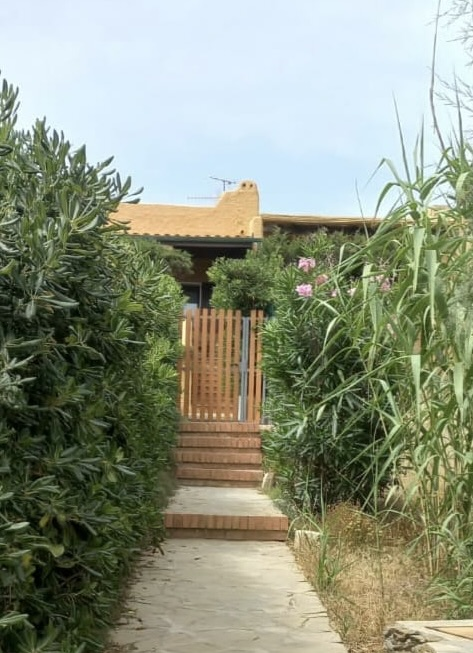
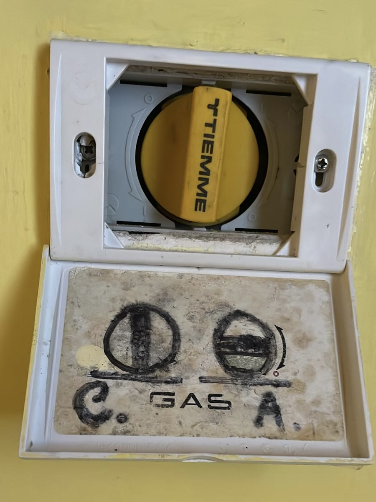

Das obige Video zeigt, wie Sie das Haus vom Ende des Strandes "La Pelosa" in der Gemeinde Stintino bis zur angegebenen Adresse erreichen.
Parkplatz und Eingang
Dieses Bild zeigt, auf welcher Seite geparkt werden muss und welche Seite des Hauseingangs ist.
Außerhalb des Hauses befindet sich ein Safe, der die Schlüssel enthält. Der Code ist 0202.

Dies ist der Eingang des Hauses im obersten Stockwerk nach der Treppe.
Anleitung für Haustechnik (Gas)

Das ist der Gashahn und er befindet sich in der Küche. Wenn es sich in vertikaler Position befindet, bedeutet dies, dass das Gas nicht in Betrieb ist, während es in horizontaler Position ist, dass das Gas in Betrieb ist.
Bevor Sie die Küche oder andere Dienstleistungen nutzen, die den Einsatz von Gas erfordern, müssen Sie sicherstellen, dass diese geöffnet sind.
Anleitung für hauswirtschaftliche Dienstleistungen (Warmwasserbereiter)
Bevor Sie das Warmwasser verwenden, müssen Sie sicherstellen, dass der Warmwasserbereiter eingeschaltet ist.
Wenn letzteres ausgeschaltet ist, kann es über den entsprechenden Knopf an der Badezimmerwand eingeschaltet werden.
Getrennte Sammlung von Müll
Sie müssen unbedingt eine getrennte Sammlung durchführen. Im Haus finden Sie die Sammelmethoden und den Kalender.
Erst nach dem Abendessen müssen Sie die Mülltonnen mit dem richtigen Müll außerhalb der Auffahrt, in der Nähe des Straßenrandes, abstellen, und morgens kommen die Öko-Betreiber vorbei, um den Müll einzusammeln.
Wenn die Betreiber den Müll abgeholt haben, können Sie den Korb mit nach Hause nehmen.
Beim Auschecken müssen Sie den gesamten Müll (der nicht von den ökologischen Betreibern abgeholt wird) mitnehmen und zum örtlichen ökologischen Zentrum gehen, dessen Standort wir Ihnen mitteilen.
Sommeröffnungszeiten
Von Montag bis Samstag
Von 8.00 - 12.00
GESCHLOSSEN: Sonn- und Feiertage.
Ökologische Insel für abreisende Touristen
In den Monaten Juli und August
in der Ortschaft Le Saline wird es eingerichtet
eine Insel, die nur für besetzt ist
ausgehende Versorgungsunternehmen. Die Zeiten von
Eröffnung ist von 8:00 bis
10:00 Uhr und von 16:00 bis 18:00 Uhr jeden Tag der Woche.
Nach seiner Position: